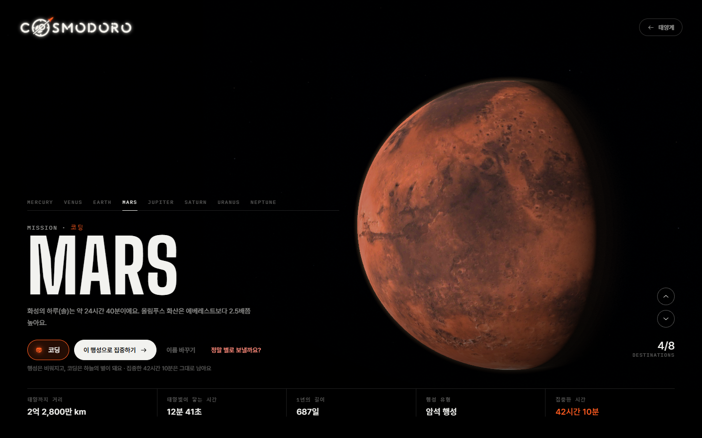
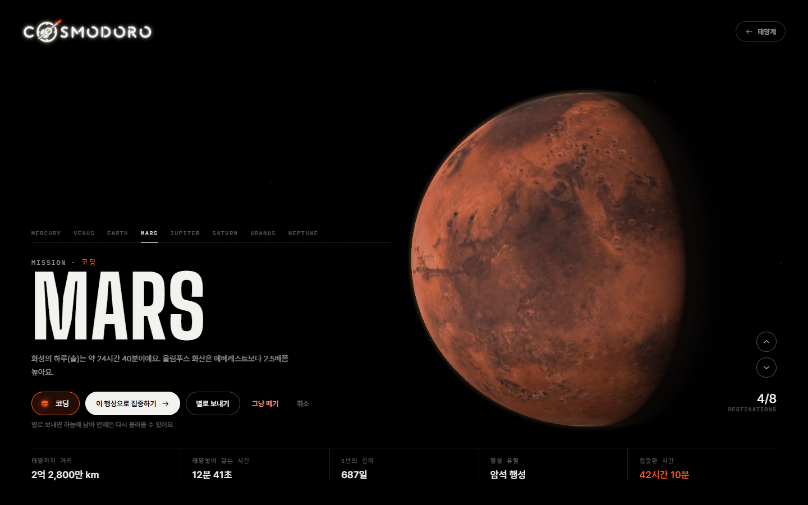
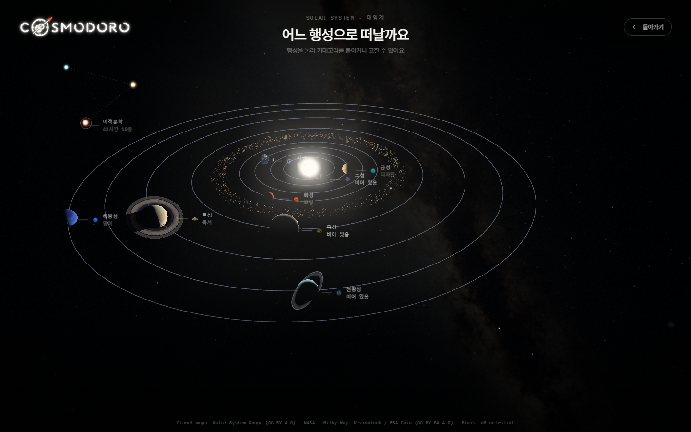
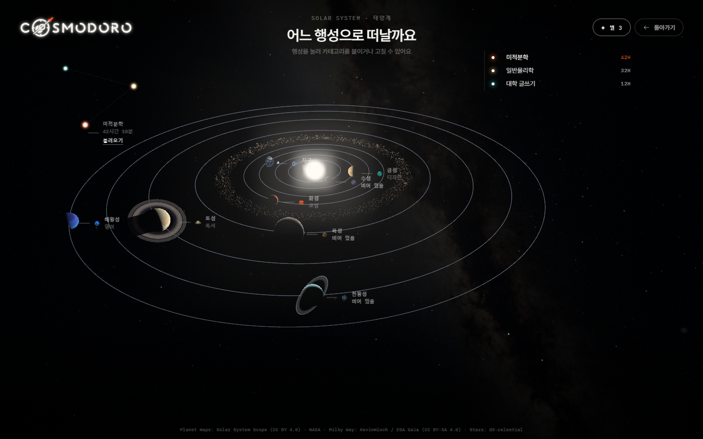
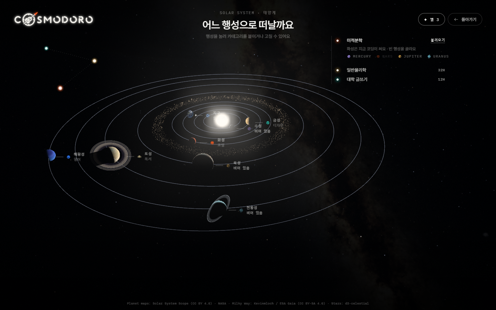

끝난 과목은 하늘의 별로
태양계 화면 실제 렌더 · 기존 버튼·이름표·목록 스타일만 사용 · 예시 과목 3개(미적분학 42시간, 일반물리학 32시간, 대학 글쓰기 12시간)
① 별로 보내기 · 행성 확대 화면
누르면 행성에서 빛 한 점이 하늘로 올라가 별이 돼요(움직임은 고른 뒤 만들어요).


② 하늘의 내 별
왼쪽 위 하늘 한 구역에 차례로 떠요. 오래 공부한 과목일수록 밝고, 옅은 점선으로 이어져 "내 별자리"가 돼요. 마우스를 올린 모습이에요.

③ 별 목록과 불러오기
오른쪽 위 "✦ 별 3" 버튼(돌아가기와 같은 모양)을 누르면 비행 중 미션 목록처럼 카드 없이 펼쳐져요.

